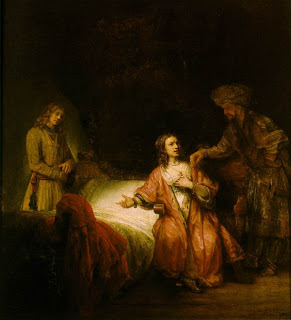

Bava Metzia 58 - Wronging with Words
Just as wrong can be done in buying and selling, so too wrong can be done in words. One should not say to someone, "How much is this item?" if he has no intention of buying. If someone was a penitent, one should not say to him, "Remember your past deeds." If someone was descended from proselytes, one should not say to him, "Remember the idol worship of your forefathers," - for it is stated in the Torah, " And you shall not wrong or oppress a proselyte ...."
The commandment " And a man shall not wrong his fellow ..." is discussing verbal wronging, since monetary wronging is discussed immediately before .
Test your knowledge of the daf